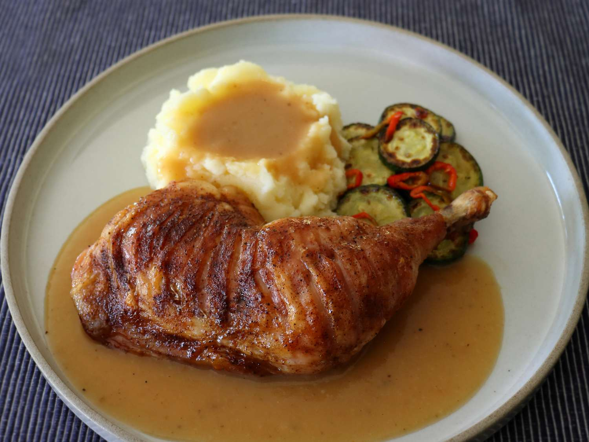

Tiger Chicken
Home

Description
This tiger chicken technique is the best way to roast chicken leg quarters, a very popular cut of chicken. The
skin is crispy and the meat comes out tender, succulent, and beautifully seasoned. Along with the fastest, best,
tastiest pan sauce ever, you are in for an exceptional bite of chicken.
Ingredients
- 4 chicken leg quarters, with skin
- 2 tablespoons all-purpose flour
- salt and freshly ground black pepper to taste
Steps
- For seasoning salt, combine salt, black pepper, garlic powder, chipotle chili powder, and baking soda in a
small bowl. Stir together thoroughly, and set aside.
- For tiger cut chicken, lay a leg quarter, skin side up, on a cutting board. With a sharp knife, begin
halfway up the chicken leg, and make cuts through the skin to the bone, every 1/4 -inch. Make these parallel
cuts all the way to the end of the thigh. Repeat with remaining leg quarters.
- Line a baking sheet with parchment paper, and place the chicken, skin side down, on the prepared baking
sheet. Sprinkle surface with 1/2 of the seasoning salt. Turn legs over and sprinkle the remaining seasoning
salt on the skin side, distributing it evenly over the entire surface.